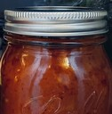

Tomato Sauce
The goal is to extract the best flavors of fresh onion and garlic
into the olive oil and mix that with high quality tomatoes which
will dominate the flavor. All measurements are negotiable.
Shopping
> one onion
> 0-4 cloves of garlic
> extra virgin olive oil. I use this one
> canned peeled tomatoes.
The best ones I've
found are San Marzano D.O.P. You can buy many different kinds and
taste them. They differ in water content, acidity, taste, texture.
The San Marzano D.O.P. ones that I get are in a thick sauce that
tastes like tomato juice, and are the least acidic out of all the
ones I tried. You can also use fresh tomatoes but the imported canned
tomatoes have more consistent quality.
> herbs
It's nice to have fresh basil or thyme. If not dried is fine. Bay
leaf is nice to have too.
Cook Aromatics
> Get the largest pot you have
> Heat a thick layer oil on medium-low
> Chop an onion into it.
Maybe also add carrot or celery if you want
> Start mincing garlic
> Open the can of peeled tomatoes.
> Add some of the liquid into a pyrex.
This way we can easily and quickly pour it to take heat off the garlic
later without making a mess. Use a ladle to move the tomatoes. The back
of the ladle is also useful for breaking up the tomatoes in the pyrex
to speed up their cooking later.
> Add the garlic when the onions are soft.
Taste it to see if it's soft. Don't rush. We don't want a crunchy sauce.
> Add the tomatoes when the garlic has
cooked for 30-60 sec and started to smell nice.
It's possible to overcook garlic. It will taste bitter.
Reduce and Season
> Bring to simmer
> Relax, clean your knife and cutting board.
Garlic gets sticky, don't let it dry.
> Occasionally stir, taste, season
(with salt, pepper, herbs)
> Simmer until it reduces.
It can take anywhere between 30min and 2 hours. Also the more it
simmers the less sour it gets.
> Add tomato paste.
Adding paste thinckens the sauce and adds flavor. But if you add
it too early (before tomatoes have fallen apart and onions have
completely melted) you'll have trouble simmering. Larger bubbles
will form and pop, which will make a mess on your stove.
> If it's still sour, maybe add sugar.
But if you used good tomatoes it probably won't be.
Store
If you have any extra, put it in jars while it's still hot,
and store them in the fridge when they cool. Freezing also
works but some flavor is lost.